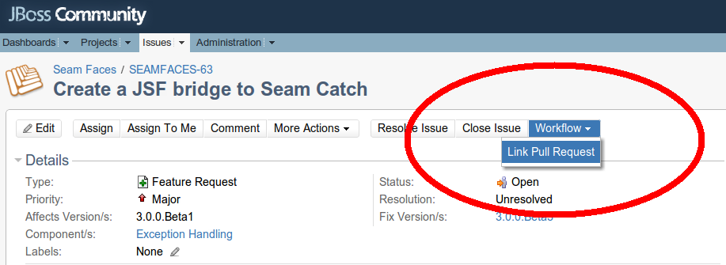

Built with Seam
You can find the full source code for this website in the Seam package in the directory /examples/wiki. It is licensed under the LGPL.

One of the greatest tenets of open source is this: if something doesn't work the way you want it to, you have the power to change it.
The good news is that you no longer need to wait for commit access to contribute to Seam, thanks to git!
To try out a unreleased feature or to contribute code or documentation, all you need to do is learn how to checkout and build the Seam project (or just a single module). Follow the instructions on the following pages to get started.nursery rhymes
For background information, refer to the Source code overview. An important prerequisite is to ensure you've prepared your build environment.
A read-only checkout
To check out all of the Seam 3 source code, in a read-only format, run the following command:
wget -N --no-check-certificate http://github.com/seam/build/raw/master/checkout.sh chmod 755 checkout.sh ./checkout.sh -d seam-master
Building the source code
Now you can build any of the modules. First, consult the module status page to see which modules are functional. Here, we are building the Seam Faces module:
cd faces mvn install cd ..
Note: If you've updated the parent or BOM, you'll need to install them locally to see your changes in the module.funny jokes
To build seam-parent, switch to the build/parent directory and run a Maven install command:
cd build/parent mvn install cd ..
To build seam-bom, switch to the dist directory and run a Maven install command:
cd dist mvn install cd ..
Fork and contribute
To ensure your contribution will be well received, it's a good idea to discuss your planned changes by filing a jira issue, and using IRC. But you don't have to have to be a project committer to make changes and share them.
Git (with the help of Github) empower you to fork a module, hack on the source and share those changes with others. You only have to involve the project team when you are ready to contribute those changes back into the project's master (upstream) branch by sending a pull request
. You do need to sign the (friendly) contributor agreement for all non Apache Licensed projects before we can pull in your changes, though.

nvie.com
Seam is using the git flow workflow for development. You can see the full workflow on the right. A typical contribution and steps to follow this workflow will be discussed below.
1. If you do not already have one, create a github account
http://github.com
2. Fork a Seam module. For this example, we'll use the Faces module
https://github.com/seam/faces
Instructions on forking a project are available on github
http://help.github.com/forking
3. Clone your newly forked copy onto your local workspace
$ git clone git@github.com:[your username]/faces.git Cloning into faces... remote: Counting objects: 3707, done. remote: Compressing objects: 100% (1370/1370), done. remote: Total 3707 (delta 1359), reused 3425 (delta 1259) Receiving objects: 100% (3707/3707), 474.28 KiB | 205 KiB/s, done. Resolving deltas: 100% (1359/1359), done. $ cd faces
4. Create a local branch named master which tracks origin/master
$ git branch master origin/master
5. Install git flow
6. Initialize git flow for your cloned repository (accept the defaults)
$ git flow init Which branch should be used for bringing forth production releases? - develop - master Branch name for production releases: [master] Which branch should be used for integration of the "next release"? - develop Branch name for "next release" development: [develop] How to name your supporting branch prefixes? Feature branches? [feature/] Release branches? [release/] Hotfix branches? [hotfix/] Support branches? [support/] Version tag prefix? []
7. Add a remote reference to upstream, for pulling future updates
git remote add upstream https://github.com/seam/faces.git
8. Build using Maven (make sure to use Maven 3)
mvn clean install

nvie.com
9. Create a simple feature branch to isolate your work. Feature branches branch from the main development branch as shown in the diagram to the left. This can be achieved using git flow:
git flow feature start FeatureBranchName
Ideally each feature will be associated with a JIRA ticket. It makes the most sense to make the branch name the same as the JIRA ticket. The remaining instructions assume you are working within your feature branch.
10. Make the changes and commit one or more times
git status // show changes git add <new_files> // add new files git commit -m 'commit message' // commit all changes
11. Pulling later updates from upstream,
Make sure updates from upstream happen on the develop branch. Switching branches in git will only work if the working directory is clean. Make sure all work has been committed to the feature branch before changing branches
git checkout develop git pull upstream develop
If there were changes that were pulled from upstream, make sure to rebase your feature branch:
git flow feature rebase FeatureBranchName
This will insure all changes you have made do not cause problems with code that has been added to the repository since you started developing your feature.
12. Push your local commits to your private github repo (origin)
git flow feature publish FeatureBranchName
At this point, you can stop and simply share your repository with your friends, colleagues or the world. This is ideal if you are working on a prototype and just want some feedback on an idea. However, we encourage you to pursue your idea to completion, which means proceeding to the next step.
11. Pull request on github
Now your topic branch on github has the commits that make up your patch, it's time to ask for your contribution to be pulled back into the upstream project.
http://help.github.com/pull-requests/
12. Link the pull request to a jira issue using the workflow option
Paste the url to your pull request in the space provided.
At this point, the core development team will be notified of your request and will follow the Integrator Workflow depicted in the diagram below.
Further reading
- Hibernate's git tips and gtricks
- Social coding in spring projects (cited workflow diagrams adopted from this source)